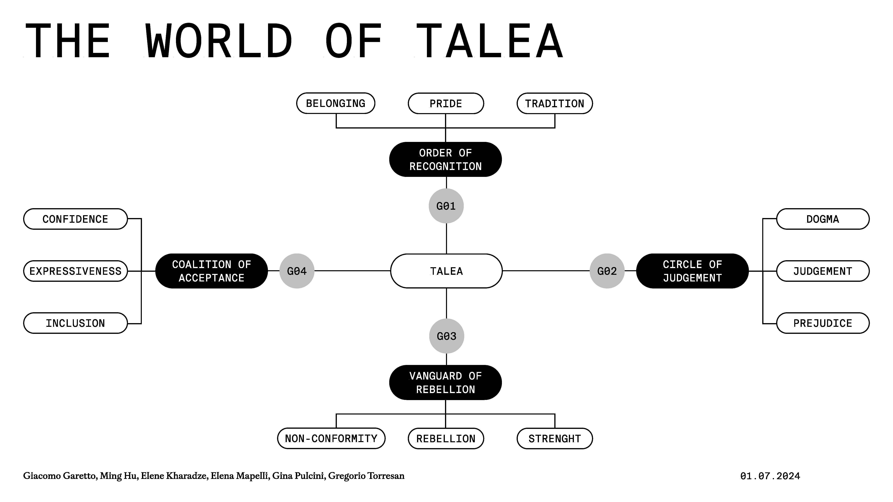
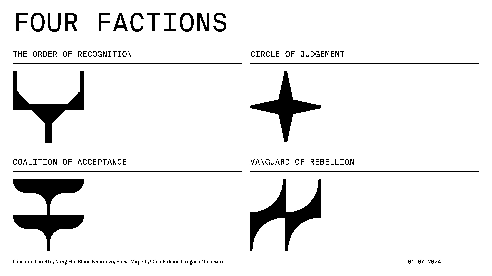
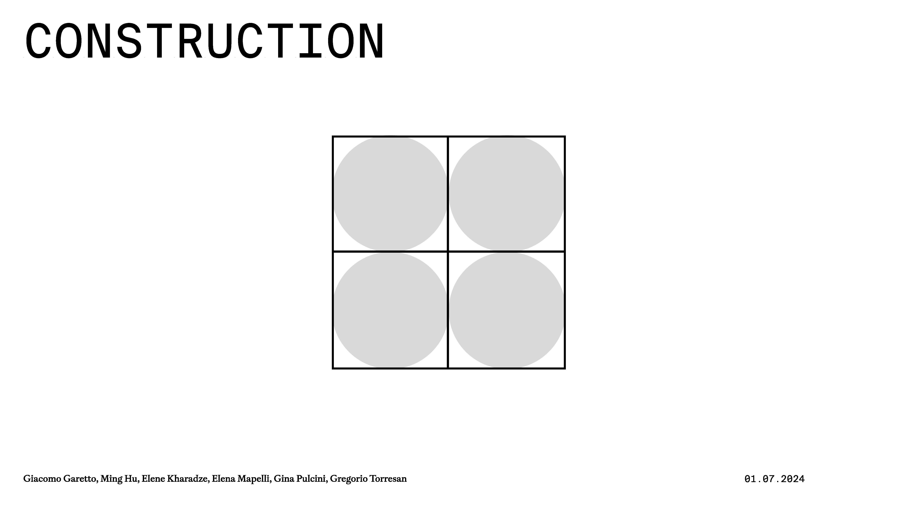
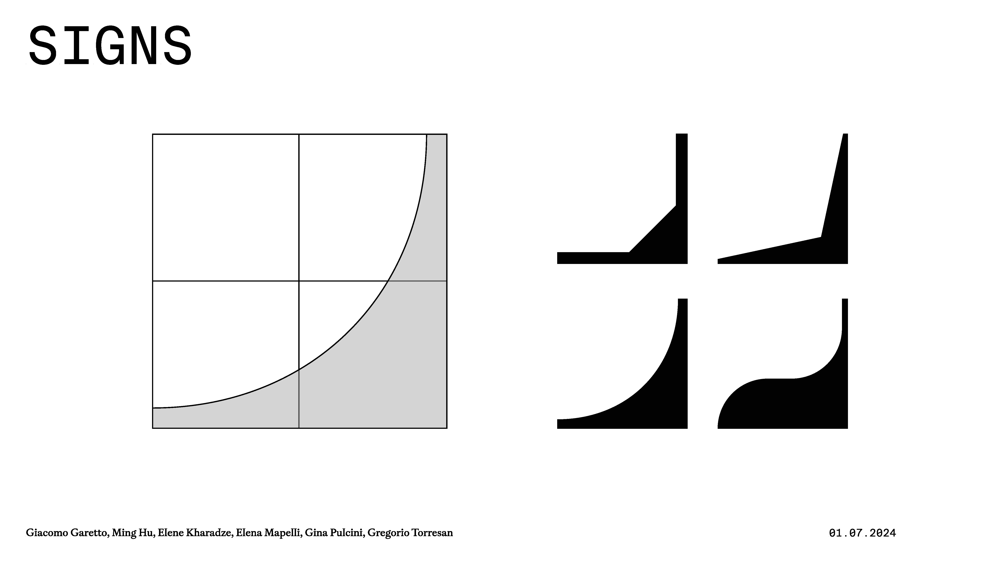
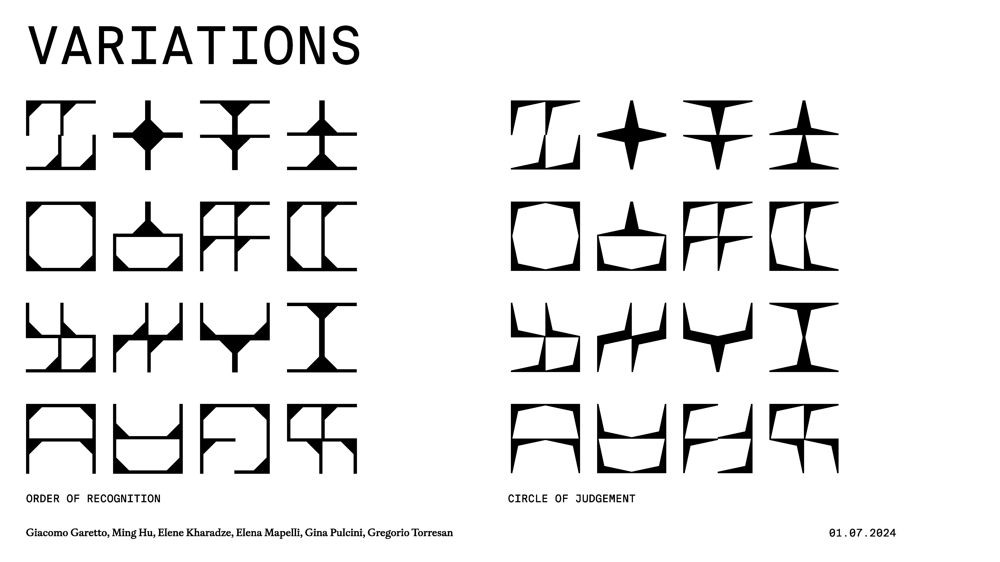
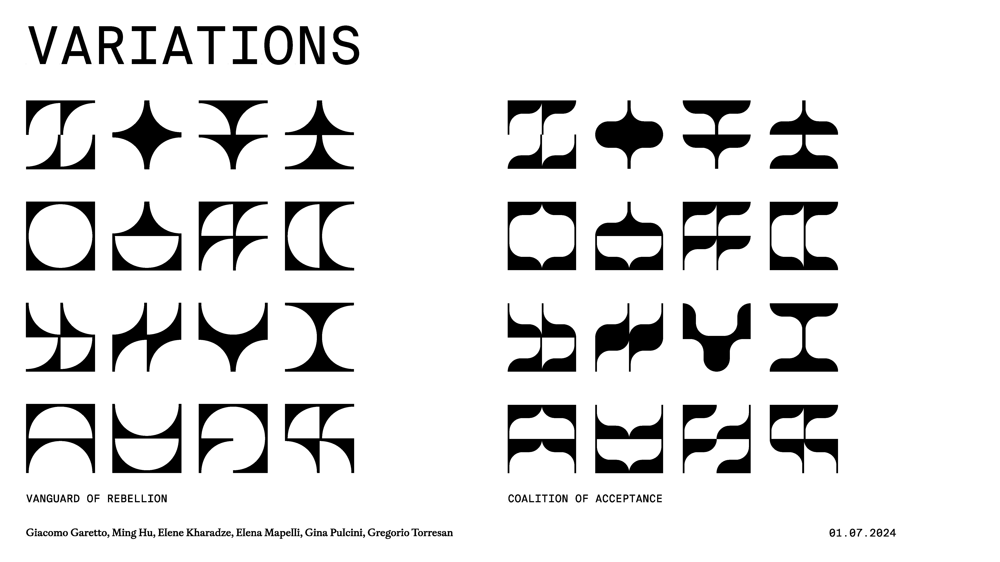
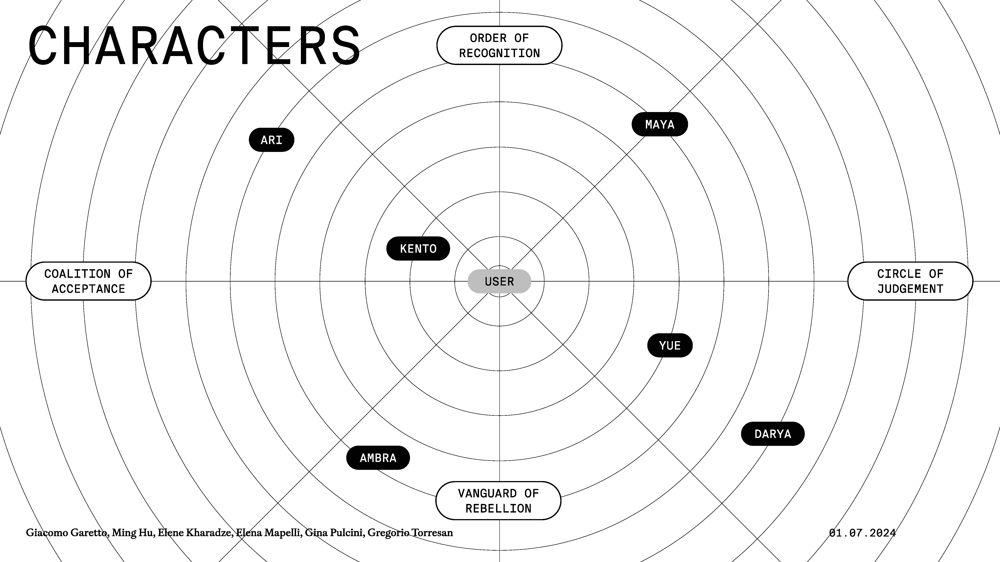

Chronicles of Ink explores social judgement and self-discovery through Talea, a metaphorical fantasy world. The interactive narrative reveals how cultural and social contexts shape double standards around tattoos.
Talea is structured around four factions, each expressing a different attitude towards tattoos—from tradition, individualism and inclusion to rigid judgement and conformity. By meeting characters with opposing values, players can safely question their own assumptions and prejudices.
The journey through Talea is one of self-discovery. Every choice changes the player’s avatar, making their path visible.

Four factions embody distinct positions: the Order of Recognition seeks acknowledgement and clarity; the Coalition of Acceptance advocates inclusion and harmony; the Vanguard of Rebellion represents defiance and change; and the Circle of Judgement stands for evaluation and categorization. Each has its own Guardian.



A shared construction grid generates the symbols of all four factions. Their values combine into a unique mark shaped by the player’s choices.


Six characters are positioned across the map according to their relationship with each faction.

Each character is linked to a set of collectable items. Finding them unlocks new dialogue and shapes the outcome of the experience.

During dialogue, players see how their choices align with each faction and alter their appearance.
After meeting one character in every area, the journey ends with the player’s final symbol and a summary of their experience.